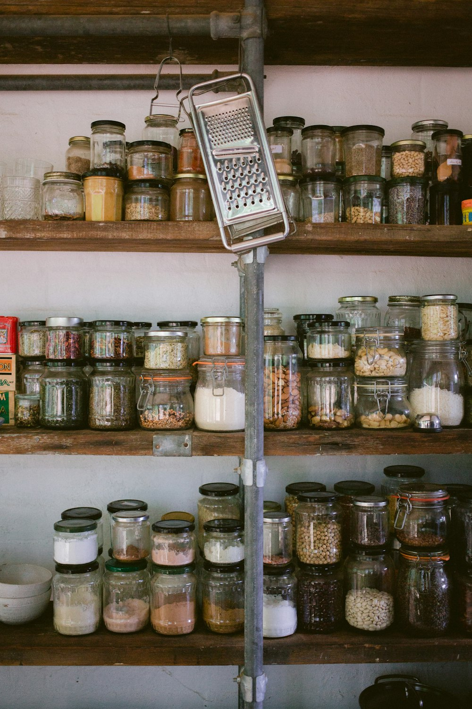

Is your tab manager private? What Simmer reads, and where it keeps it
Short answer
A tab manager can read the address and title of every tab you open, so where it keeps them matters. Simmer reads them on your computer and stores what it saves in Chrome's own storage there. There's no account and no Simmer server, and the only network features, such as your own Claude API key, are off until you turn them on.

What any tab manager can see
To list and close your tabs, an extension needs Chrome's tabs permission, which lets it read the address and title of every open tab. That's your browsing, one page at a time. It's worth knowing where that goes before you install anything.
Five questions to ask before installing one
- Does it need an account? An account usually means your tabs are copied to a server.
- Where are saved tabs kept? In the browser on your computer, or in someone's cloud.
- Which permissions are optional? Good extensions ask for extra access only when you turn on the feature that needs it.
- Does it load code from the internet? Code fetched at run time can change after review.
- Is there a privacy policy that names every permission?
How the best-known extensions answer the first two is set out in OneTab, Session Buddy, Toby, Workona and Simmer compared.
What Simmer reads, and why
| Permission | What Simmer does with it |
|---|---|
| Tabs | Reads tab addresses and titles to work out tasks, find idle tabs, put tabs away and bring them back. |
| Tab groups | Treats a Chrome tab group as a task, and restores groups when tabs come back. |
| Storage | Saves settings, tabs put away and the activity list with Undo, on your computer. |
| Bookmarks | Files saved tabs into your bookmark folders when you choose. Undo removes only bookmarks Simmer made. |
| Downloads (optional) | Asked for only when you turn on automatic backups, to write the file to Downloads/Simmer. |
| Site access (optional) | Asked for only when you turn on reading pages or checking links. Both are off until you turn them on. |
A model that stays on your computer
Simmer compares tab titles to find tabs about the same thing, in English and Japanese. The model that does it is packed inside the extension and runs on your computer. Simmer loads no code from the internet: all its JavaScript and WebAssembly ship in the package.
If you add your own Claude API key and turn on Claude features, tab titles and site names go from your browser straight to Anthropic with your key. That's off unless you choose it.
The full list is in the privacy policy.
Questions
- Can a Chrome extension see my browsing?
- An extension with the tabs permission can read the address and title of every open tab. Check where it keeps them, and whether it needs an account.
- Does Simmer have a server?
- No. There is no account and no Simmer server. Everything it saves stays in Chrome on your computer.
- Does Simmer use AI in the cloud?
- Not by default. Tab titles are compared by a small model that runs on your computer. Cloud features need your own Claude API key and are off until you turn them on.